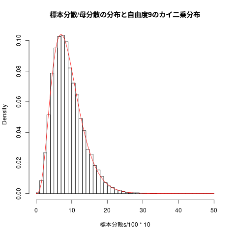

入門統計学 3章 推定と誤差
#+beign_src R :tangle R-text/code/03.R
標本分布 (http://wiki.cis.iwate-u.ac.jp/~suzuki/RforS/org/RforS-II-04.html より抜粋)
正規母集団
## ## 正規分布のグラフを描く ## curve(dnorm(x), from=-4, to=4, main="図4.4-5 正規分布 N(0, 1), N(0,2), N(1,1)") # 標準正規分布のグラフ， -4 から +4 の範囲 curve(dnorm(x,sd=2), add=TRUE) # 平均0， 偏差2 の正規分布，上描き curve(dnorm(x,mean=1,sd=1), add=TRUE) # 平均1， 偏差1 の正規分布，上描き
正規母集団から単純無作為抽出を行なう
Rを使って正規分布の母集団から標本を抽出する方法
例えば、平均50、標準偏差10の正規母集団からn＝5の標本を無作為抽出 する
## ## 平均50、標準偏差10の正規母集団からn＝5の標本を無作為抽出する ## rnorm(n=5, mean=50, sd=10) # 標本の抽出 hist(rnorm(n=5, mean=50, sd=10), main="図4.7 N(50, 10)からの n=5 の標本の頻度表") # 頻度表の描画
図 4.7 N(50,10)からの n=5 の標本の頻度表
## ## 平均50、標準偏差10の正規母集団からn＝1000の標本を無作為抽出する hist(rnorm(n=1000, mean=50, sd=10), main="図4.8 N(50, 10)からの n=1000 の標本の頻度表")
図 3.8 N(50,10)からの n=1000 の標本の頻度表
標本分布
- 標本分布
- 標本統計量の確率分布のこと
- 推定値の信頼性の判断に用いる
- 標本における個々のデータの実現値を表した度数分布ではなく、
- 標本統計量の確率分布である
標本分布から何が分るのか
（1）標本分布が母数の本当の値を中心として分布しているか （2）標本分布が横に大きく広がっていないか
標本分布を経験的に求める
標本分布は次のものから数学的に求まる:
- 母集団分布
- 標本統計量の計算式 (変数変換)
- 標本数
Rを用いて，理論的ではなく，経験的の標本分布を求めることができる
標本統計量の実現値を大量に得られれば，そのヒストグラムは，標本分 布近いものとなるはず。
- サイズ \( n \) の標本を何度も繰かえし抽出し，実現量を計算し，ヒス トグラムを作成する
しかし，母集団分布が母数を含めてわかっていないため，
- 「もし母集団分布がこのような正規分布だったら、
- このくらいあてになる推定値が得られる」
ということを検討することになる。
正規母集団の母平均の推定
- 母集団分布 \( \sim N(50, 10^2)\)
- \( n = 10 \)
- 母平均の推定量は，標本平均 \( \overline{X} \)
## ## 標本サイズ10の標本による，母平均の推定 標本 <- rnorm(n=10, mean=50, sd=10) mean(標本)
44.9971134002593
標本平均の標本分布を求める
母平均の推定を10000回繰り返し
## ## 母平均の推定 ### 母集団 N(50, 10^2) から ### 標本サイズ 10の標本の標本平均 ### 10000個の標本平均の頻度表を描く this.mean <- 50 this.sd <- 10 this.counts <- 10000 for (this.sample_size in c(10,20,40,80,160)) { 標本平均 <- numeric(length=this.counts) for(i in 1:this.counts) { 1 標本 <- rnorm(n=this.sample_size, mean=this.mean, sd=this.sd) 標本平均[i] <- mean(標本) } cat("sample_size=", this.sample_size, "mean=", mean(標本平均), "var=", var(標本平均), "\n") }
sample_size= 10 mean= 49.96241 var= 10.05521 sample_size= 20 mean= 50.0166 var= 4.972701 sample_size= 40 mean= 50.00013 var= 2.492854 sample_size= 80 mean= 49.98691 var= 1.258187 sample_size= 160 mean= 50.0009 var= 0.6234049
hist(標本平均,main="図4.12 標本抽出10,000回のときの標本平均の分布")
母平均 (50)からのズレが5以内か否かで振り分ける
## 母平均 (50)からのズレが5以内か否かで振り分ける 誤差絶対値5以下 <- ifelse( abs(標本平均-50) <= 5, 1, 0) table(誤差絶対値5以下)
| 0 | 1190 |
| 1 | 8810 |
88%くらいは，母平均+-5に収まっている
- (n → inf) で \( E(\overline{X}) = \)母平均
## ## 10000個の標本平均の平均値 mean(標本平均) ## 10000個の標本平均の分散値 var(標本平均)
[1] 50.00111 [1] 0.6388567
## # png("graphs/fig-04-13.png", width=400, height=300) ## hist(標本平均,freq=FALSE, main="図4.13 標本平均の標本分布") curve(dnorm(x, mean=this.mean, sd=this.sd/sqrt(this.sample_size)), add=TRUE, col="red")
4.5.5 不偏性
推定値 (e.g. 標本平均) の平均 (e.g. 標本分布の平均) は 母集団分布によらず， 母数 (e.g. 母平均) に一致すること
標本平均は，母平均の不偏推定量である。
4.5.6 標準誤差
推定量の標本分布を調べるときの2つの観点のうち「（2）標本分布が横 に大きく広がっていないか」にかかわるのが標準誤差です。
標準誤差は、推定量の標本分布の標準偏差と定義する
標準誤差が小さいということ
- 運不運によって結果が大きく左右されない
- また、誰がいつやってもだいたい同じ結果が安定 して得られる
上の \( N(50,10^2) \)の正規母集団から \( n=10 \) の標本を抽出した ときの標本平均の例では、
- 標本平均の標本分布はN(50,10)だったので，
- 標準誤差は \( \sqrt{10} \) となります。
一般的に、
- 母集団が，平均 \( \mu \)、分散\( \sigma^2 \) の正規分布で
- 標本サイズ \( n \) の標本を抽出したとき、
- その標本平均の標本分布は \( N(\mu, \frac{\sigma^2}{n}) \)となる
- 標準誤差は \( \frac{\sigma}{\sqrt{n}} \) となる。
このことから、
- 母集団分布の分散（標準偏差）が大きいほど、標本平均の標準誤差が 大きくなる。つまり、母分散が大きいと、そこから無作為抽出した標 本の平均値は母平均から外れた値をとりやすくなる。
- 標本サイズが大きいほど、標本平均の標準誤差が小さくなる。つ まり、標本サイズを大きくすれば、そこから無作為抽出した標本 の平均値は母平均に近い値をとりやすくなる
実際に、先ほどの\( N(50,10^2) \) という母集団からの標本抽出の例で、標本サ イズを10倍の \( n=100 \) にしてみると
this.sample_size <- 100 標本平均 <- numeric(length=this.counts) for(i in 1:this.counts) { 標本 <- rnorm(n=this.sample_size, mean=this.mean, sd=this.sd) 標本平均[i] <- mean(標本) } mean(標本平均) ## 付加 var(標本平均) 誤差絶対値5以下 <- ifelse( abs(標本平均-50) <= 5, 1, 0) ## 付加 table(誤差絶対値5以下) ## 付加
[1] 50.01843
[1] 1.013532
誤差絶対値5以下
1
10000
## ## png(RforS-graphs/04-14.png) hist(標本平均,freq=FALSE, main="図4.14 標本サイズを大きくしたときの標本平均の標本分布") curve(dnorm(x,mean=50,sd=this.sd/sqrt(this.sample_size)),col="red",add=TRUE) curve(dnorm(x,mean=50,sd=this.sd/sqrt(10)),col="blue",add=TRUE)
4.6 標本分散と不偏分散の標本分布
- 不偏分散は，母分散の不偏推定量
標本分散は，標本の散布度
## ## 4.6 標本分散と不偏分散の標本分布 ## samples.no <- 10000 # いくつ標本を用いるか sample.size <- 10 # ひとつの標本の中のデータの個数 this.mean <- 50 # 分布の平均 this.sd <- 10 # 分布の標準偏差 標本分散s <- numeric(samples.no) # 各々の標本の分散値の保存場所 不偏分散s <- numeric(samples.no) # 各々の標本の不偏分散値の保存場所 for (i in 1:samples.no) { 標本 <- rnorm(n=sample.size, mean=this.mean, sd=this.sd) # ひとつの標本の生成 標本分散s[i] <- mean((標本-mean(標本))^2) 不偏分散s[i] <- var(標本) } c(mean(標本分散s),sd(標本分散s)) # 標本分散達の平均と分散 c(mean(不偏分散s),sd(不偏分散s)) # 標本不偏分散達の平均と分散
[1] 90.08901 42.72613 [1] 100.09890 47.47348
## ## 標本分散の頻度表 ## hist(標本分散s, breaks=seq(0,500,10), main="標本分散の分布")
## ## 標本不偏分散の頻度表 ## hist(不偏分散s, breaks=seq(0,500,10), main="不偏分散の分布")
図4.15 標本分散と不偏分散の分布


## ## 標本分散の分布 ## hist(標本分散s/100*10, freq=FALSE, breaks=seq(0,50,1), main="標本分散/母分散の分布と自由度9のカイ二乗分布") curve(dchisq(x,9), add=TRUE, col="red")
## ## 標本不偏分散の分布 ## hist((不偏分散s/100)*9, freq=FALSE, breaks=seq(0,50,1), main="不偏分散/母分散の分布と自由度9のカイ二乗分布") curve(dchisq(x,9), add=TRUE, col="red")
